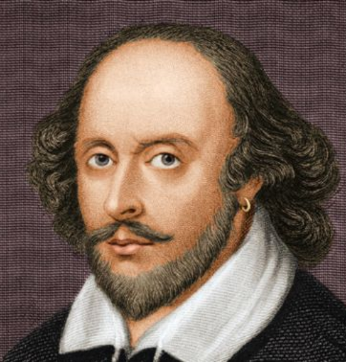

Англійський драматург, поет і актор Вільям Шекспір народився 23 квітня 1564 року в Стратфорді-на-Ейвоні, графство Уорвікшір, Англія, у сімї торговця. Батько майбутнього драматурга торгував різними сільськогосподарськими товарами: ячменем, лісом, шерстю і в той же час був мером Стратфорда.
Творчість Шекспіра, якого видатний російський критик В. Бєлінський назвав "яскравою зорею й урочистим світанком ери нового, справжнього мистецтва", є найвищим досягненням європейської літератури доби Відродження.

У вісімнадцятирічному віці одружився на Енн Хетауей, яка була на вісім років старшою за нього. Через три роки після одруження покинув Стретфорд. Перші його друковані твори з'являються тільки в 1594 році. Біографи припускають, що за цей період він якийсь час був актором мандрівної трупи, 3 1590 р. працював у різних театрах Лондона, а з 1594 вступив у найкращу лондонську трупу Джеймса Бербеджа. З моменту побудови Бербеджем театру "Глобус", тобто з 1599 р. і до 1621 р. життя його пов'язане з цим театром, пайщиком і актором і драматургом якого він є. Сім'я його весь цей час залишалася в Стретфорді, куди він повертається, припинивши театральну і творчу діяльність, і де вмирає 23 квітня (у день свого народження) 1612 року у п'ятидесятидвохрічному віці.
37 драм
154 cонети
2 поеми
Його драматургічна і поетична спадщина, згідно "шекспірівського канону" (першого повного видання творів Шекспіра, здійсненого у 1623р.) складається з 37 драм, 154 сонетів та двох поем — "Венера і Адоні" і "Знеславлена Лукреція". Всі драматичні твори Шекспіра написані білим віршем з використанням прози. Поєднання віршів і прози є характерною рисою шекспірівської драматургії, зумовленою як художнім матеріалом, так і естетичними завданнями.
Сонети
Ми пагінці плекаємо кущів,
Щоб відновить красу троянди ними.
Хай кущ старий і всохне без дощів, —
Весною пагін молодий цвістиме.
А ти, в свій блиск закоханий без меж,
Марнуєш скарб, позичений в природи,
І з голоду серед достатку мреш,
Жорстокий вороже своєї вроди.
Провіснику весняної снаги,
Коротких днів окрасо нетривала,
Твоя самітність нині в ланцюги
Потік життя безжально закувала.
Над світом змилуйся і дар краси
Новим вікам назустріч понеси.
Як сорок зим, суворі й невмолимі,
Чоло твоє поріжуть молоде,
А врода юності більш не цвістиме
І вже зів’ялим листом опаде, —
Що скажеш ти, де молодості шати?
Слова: "Я зберігав недбало їх"
Ганебним будуть вироком звучати
Тоді в устах, розтратнику, твоїх.
Чи відповідь не краща від тієї:
"Оце мій син, на нього подивись,
В нім виправдання старості моєї
І свідчення, яким я був колись".
Раз по раз дивлячись на сина свого,
Подібним станеш сам до молодого.
Поглянь на схід, як в сяйві благовіснім
Лице вогненне ранок підійма,
І вся земля тим променям навкісним
Вітання шле, ясніючи сама.
Зеніту дійде світла колісниця,
Як молодість — найкращої пори,
І ми за сяйвом повертаєм лиця,
Рвучись душею й тілом догори.
Коли ж з горба небесного поволі
Світило стомлене іде на спад,
Його красу забувши, мимоволі
Ми до землі вертаємось назад.
Пополудні й твою забудуть вроду,
І сам помреш, як не поновиш роду.
Ти — музика, чого ж музичні звуки
Печаль породжують в очах твоїх?
Чом любиш те, що завдає лиш муки,
Радієш прикрощам і прагнеш їх?
Ті звуки, здружені в однім концерті,
Твій дух бентежать, нищать супокій?
В них докір лиш самотності упертій
І докір безпотомності твоїй.
Чи чуєш ти, як струни дружним ладом
Озвалися на ніжний звук струни?
Неначе пісню, посідавши рядом,
Співають батько, мати і сини.
1 звуки ті без слів проголосили:
"В твоїм житті не має соло сили".
Шекспірівське питання» — питання, яке виникло внаслідок недостатності фактів з біографії В. Шекспіра. Це наштовхнуло деяких дослідників на думку, що Шекспіра як реальної особи взагалі не існувало, а всі його п’єси були створені різними авторами. Серед них називали імена філософа Ф. Бекона, лорда Ретленда, лорда Дарбі, лорда Оксфорда і навіть мореплавця В. Ролея. Свої міркування вчені-дослідники намагалися відстоювати за допомогою аргументації, не позбавленої деякої переконливості. Вони посилалися на те, що син простого торговця і чинбаря не міг так добре знати деталі придворного життя і світського етикету, які він відтворював у своїх п’єсах. Виходячи з відомого факту про те, що Шекспір здобув лише початкову освіту, вчені дивувалися, яким чином і коли він зміг так ґрунтовно вивчити стародавню історію та античну літературу, звідки йому були відомі твори зарубіжних авторів, не перекладені в той час англійською мовою.
Вчимо англійську мову з Шекспіром
"To be, or not to be" ("Бути чи не бути"), слова з п’єси "Hamlet". Ними починається відома промова принца Гамлета, де він розмірковує про самогубство як про спосіб втечі від своїх проблем: "To be, or not to be: that is the question".
І в повсякденному житті ці слова ну дуже популярні, адже майже кожна людина хоч раз вживала їх в моменти розмірковувань чи то вагань. Разом з тим саме завдяки цій фразі у англійській мові з’явилися такі крилаті вирази як «Two beer or not two beer”
"Neither a borrower nor a lender be" ("Не бери в борг і не позичай"), – ці рядки належать п’єсі "Hamlet". Полоніус, мудрий старий чоловік, дає цю пораду своєму сину.
Дані слова є актуальними й сьогодні, адже й зараз наші батьки дають нам такого роду поради. А ще ця фраза стала однією з найпопулярніших назв для статей економічного характеру в усьому світі. Дивно, правда?
"All the world's a stage", and all the men and women merely players" ("Весь світ – театр. В ньому жінки, чоловіки – усі актори"), – це початок відомої п’єси "As You Like It". Також вона ще відома під назвою "The Seven Ages of Man", оскільки тут піднімається питання декількох етапів людського існування: "his years as infant, schoolboy, lover, soldier, judge, foolish old man, and finally "second childishness and mere oblivion".
Цю фразу часто згадують у значенні, що кожен у цьому світі має свою роль

.png)
.png)
.png)
.png)